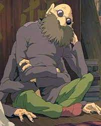

Kamajī
Kamajī é um homem idoso com seis braços longos que opera a sala das caldeiras da casa de banho. Ele se parece com uma aranha. Várias bolas de fuligem trabalham para ele carregando carvão em sua fornalha. Ele tem armários grandes onde guarda todas as ervas que são usadas nos banhos.
Habilidades
Seus membros podem se estender, permitindo que ele tenha acesso aos armários superiores de seu local de trabalho sem ter que sair de sua posição de trabalho original. Ele usa seus braços para se mover, ao invés de suas pernas curtas. Ele só deixa sua posição uma vez para ajudar o Haku ferido.
Ele tem uma boa memória. Ele sabe onde as ervas são colocadas e as tira dos armários sem olhar para trás. Ele também conhece a medicina e a magia do Reino Espiritual. Ele reconheceu instantaneamente o remédio de ervas na mão de Chihiro e sabe como quebrar a maldição de Zeniba sobre Haku. Ele pode fazer bolas de fuligem com fuligem.
Inspiração
Seu nome Kamajī significa homem velho na caldeira de ferro. Kamajī é um Tsuchigumo, uma aranha humanóide do folclore japonês. As aranhas simbolizam a indústria e o progresso. Tsuchigumo também significa seres humanos que vivem no subsolo cobertos de sujeira.
Na mitologia japonesa, os Tsuchigumo são uma população exterminada pelo governante Jimmu. Os Tsuchigumos vivem em paz até que os humanos tomem suas terras. A verdadeira razão do extermínio dos Tsuchigumos nunca foi mencionada na mitologia japonesa.
Aparência física
Seus membros aparentemente podem se estender indefinidamente, permitindo que ele tenha acesso aos armários superiores de seu local de trabalho sem ter que sair de sua posição original. Kamajī parece passar a maior parte de seu tempo em seu local de trabalho, já que ele é visto dormindo e fazendo suas refeições ali. Ele raramente se levanta, por isso mal se vê suas duas pequenas pernas.